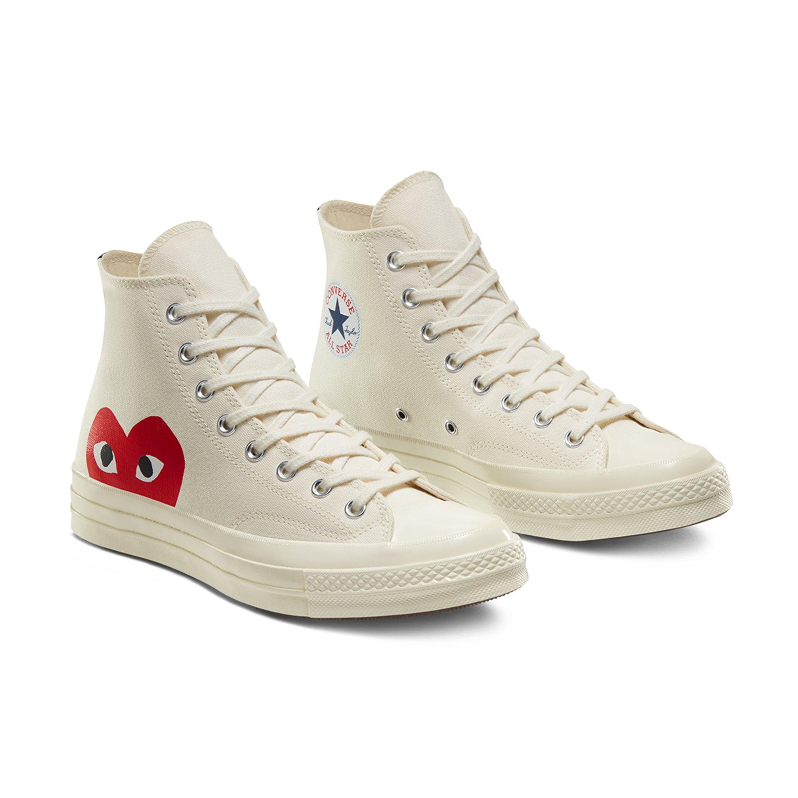

Converse Кеды Converse X Comme Des Garçons Play Chuck 70 High Top
Модель Converse x Comme des Garçons PLAY Chuck 70 представляет собой «облегченный» вариант классической модели кед Chuck Taylor.
Модель Converse x Comme des Garçons PLAY Chuck 70 представляет собой «облегченный» вариант классической модели кед Chuck Taylor. Необычный логотип в форме сердца с глазами, разработанный художниками-дизайнерами Филипом Паговски из Нью-Йорка и Реем Кавакубо из японской компании Comme des Garçons, столь же узнаваем, как и сам логотип Chuck Taylor. В нашей классической и знаковой модели сошлись два культовых бренда, превратившие ее в образец стиля от Парижа до Нью-Йорка.
- Материал: прочный текстиль
- Резиновый носок в цвет ранта
- Тисненый логотип на блестящей промежуточной подошве
- Фирменная нашивка в виде сердца с глазами на внешней боковине
- Подошва из вулканизированной резины с амортизацией OrthoLite
Артикул: 012312.
Материал: верх: текстиль; низ: резина.